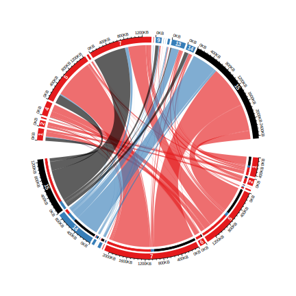
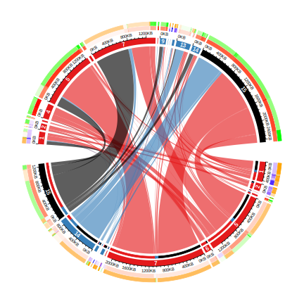

Chapter 15 A complex example of Chord diagram
In this chapter, we demonstrate how to make a complex Chord diagram and how to customize additional tracks by visualizing chromatin state transitions as well as methylation changes. A chromatin state transition matrix shows how much a chromatin state in the genome has been changed from e.g. one group of samples to the other. The genomic regions for which the chromatin states change also have variable methylation patterns which may show interesting correspondance to chromatin states change.
The data used in this post is processed from Roadmap dataset. The chromatin states are learned from five core chromatin marks. Roadmap samples are classified into two groups based on expression profile. In each group, a chromatin state is assigned to the corresponding genomic bin if it is recurrent in at least half of the samples in each group.
The processed data can be set from http://jokergoo.github.io/data/chromatin_transition.RData.
load("data/chromatin_transition.RData")In the RData file, there are three matrix: mat, meth_mat_1 and meth_mat_2 which are:
mat: chromatin state transition matrix. Rows correspond to states in group 1 and columns correspond to group 2. The value in the matrix are total base pairs that transite from one state to the other. E.g.mat["TssA", "TxFlnk"]is the total base pairs that have “TssA” state in samples in group 1 and transites to “TxFlnk” state in samples in group 2. On the diagonal are the regions where the states have not been changed in the two groups.meth_mat_1: mean methylation for each set of regions in group 1.meth_mat_1["TssA", "TxFlnk"]is the mean methylation for the regions in group 1 that have “TssA” state in group 1 and “TxFlnk” state in group 2.meth_mat_2: mean methylation for each set of regions in group 2.meth_mat_2["TssA", "TxFlnk"]is the mean methylation for the regions in group 2 that have “TssA” state in group 1 and “TxFlnk” state in group 2.
mat[1:4, 1:4]## TssA TssAFlnk TxFlnk Tx
## TssA 497200 79600 13400 1800
## TssAFlnk 56400 233200 5000 800
## TxFlnk 0 400 43000 1800
## Tx 800 200 200 166400meth_mat_1[1:4, 1:4]## TssA TssAFlnk TxFlnk Tx
## TssA 0.1647232 0.1580874 0.1917435 0.2690045
## TssAFlnk 0.2591677 0.2689880 0.3616242 0.3411387
## TxFlnk NA 0.3697514 0.3360386 0.4752722
## Tx 0.8268626 0.7822987 0.5799682 0.6595322Normally, in majority in the genome, chromatin states of regions are not changed in the two groups, thus, we should only look at the regions in which the states are changed.
# proportion of the unchanges states in the genome
sum(diag(mat))/sum(mat)## [1] 0.6192262# remove the unchanged states
diag(mat) = 0When making the plot, actually rows and columns are different (because one is from group 1 and the other is from group 2), thus we give them different names and the original names are stored in all_states.
all_states = rownames(mat)
n_states = nrow(mat)
rownames(mat) = paste0("R_", seq_len(n_states))
colnames(mat) = paste0("C_", seq_len(n_states))
dimnames(meth_mat_1) = dimnames(mat)
dimnames(meth_mat_2) = dimnames(mat)Next we set the colors. colmat is the color of the links and the colors are represent as hexadecimal code. Links have more transparent (A0) if they contain few transitions (< 70th percentile) because we don’t want it to disturb the visualization of the major transitions.
state_col = c("TssA" = "#E41A1C",
"TssAFlnk" = "#E41A1C",
"TxFlnk" = "#E41A1C",
"Tx" = "#E41A1C",
"TxWk" = "#E41A1C",
"EnhG" = "#E41A1C",
"Enh" = "#E41A1C",
"ZNF/Rpts" = "#E41A1C",
"Het" = "#377EB8",
"TssBiv" = "#377EB8",
"BivFlnk" = "#377EB8",
"EnhBiv" = "#377EB8",
"ReprPC" = "#377EB8",
"ReprPCWk" = "#377EB8",
"Quies" = "black")
# one for rows and one for columns
state_col2 = c(state_col, state_col)
names(state_col2) = c(rownames(mat), colnames(mat))
colmat = rep(state_col2[rownames(mat)], n_states)
colmat = rgb(t(col2rgb(colmat)), maxColorValue = 255)
qati = quantile(mat, 0.7)
colmat[mat > qati] = paste0(colmat[mat > qati], "A0")
colmat[mat <= qati] = paste0(colmat[mat <= qati], "20")
dim(colmat) = dim(mat)Now we can use chordDiagram() function to make the plot. Here we set one pre-allocated track in which the methylation information will be added later. Also we only set annotationTrack to grid and the axes and sector labels will be customized in later code.
chordDiagram() returns a data frame which contains coordinates for all links.
circos.par(start.degree = -5, gap.after = c(rep(1, n_states-1), 10, rep(1, n_states-1), 10),
cell.padding = c(0, 0, 0, 0), points.overflow.warning = FALSE)
cdm_res = chordDiagram(mat, col = colmat, grid.col = state_col2,
directional = TRUE, annotationTrack = "grid", preAllocateTracks = list(track.height = 0.1))
head(cdm_res)## rn cn value o1 o2 x1 x2 col
## 1 R_1 C_1 0 15 13 431200 267200 #E41A1C20
## 2 R_2 C_1 56400 15 12 159800 267200 #E41A1CA0
## 3 R_3 C_1 0 15 11 3600 210800 #E41A1C20
## 4 R_4 C_1 800 15 10 34600 210800 #E41A1C20
## 5 R_5 C_1 98200 15 9 1411600 210000 #E41A1CA0
## 6 R_6 C_1 0 15 8 139800 111800 #E41A1C20Now the axes are added in the second track, also, the index of states are added at the center of the grids in the second track, if the degree for a sector is larger than 3 degrees. Note since there is already one pre-allocated track, the circular rectangles are in the second track (track.index = 2).
circos.track(track.index = 2, panel.fun = function(x, y) {
if(abs(CELL_META$cell.start.degree - CELL_META$cell.end.degree) > 3) {
sn = CELL_META$sector.index
i_state = as.numeric(gsub("(C|R)_", "", sn))
circos.text(CELL_META$xcenter, CELL_META$ycenter, i_state, col = "white",
font = 2, cex = 0.7, adj = c(0.5, 0.5), niceFacing = TRUE)
xlim = CELL_META$xlim
breaks = seq(0, xlim[2], by = 4e5)
circos.axis(major.at = breaks, labels = paste0(breaks/1000, "KB"), labels.cex = 0.5)
}
}, bg.border = NA)
On the top half, it is easy to see the proportion of different transitions in group 1 that come to every state in group 2. However, it is not straightforward for the states in the bottom half to see the proportion of different states in group 2 they transite to. This can be solved by adding small circular rectangles. In following example, the newly added circular rectangles in the bottom half shows e.g. how much the state 15 in group 1 has been transited to different states in group 2.
for(i in seq_len(nrow(cdm_res))) {
if(cdm_res$value[i] > 0) {
circos.rect(cdm_res[i, "x1"], -uy(1, "mm"),
cdm_res[i, "x1"] - abs(cdm_res[i, "value"]), -uy(2, "mm"),
col = state_col2[cdm_res$cn[i]], border = state_col2[cdm_res$cn[i]],
sector.index = cdm_res$rn[i], track.index = 2)
}
}
Methylation in each category is put on the most outside of the circle. On this track, we will put two paralle rectangles which are mean methylation and methylation difference between group 1 and group 2. Basically, on the bottom, we show meth_mat_2 - meth_mat_1 and on the top we show meth_mat_1 - meth_mat_2.
abs_max = quantile(abs(c(meth_mat_1, meth_mat_2) - 0.5), 0.95, na.rm = TRUE)
col_fun = colorRamp2(c(0.5 - abs_max, 0.5, 0.5 + abs_max), c("blue", "white", "red"))
col_fun2 = colorRamp2(c(-abs_max, 0, abs_max), c("green", "white", "orange"))
ylim = get.cell.meta.data("ylim", sector.index = rownames(mat)[1], track.index = 1)
y1 = ylim[1] + (ylim[2] - ylim[1])*0.4
y2 = ylim[2]
for(i in seq_len(nrow(cdm_res))) {
if(cdm_res$value[i] > 0) {
circos.rect(cdm_res[i, "x1"], y1, cdm_res[i, "x1"] - abs(cdm_res[i, "value"]), y1 + (y2-y1)*0.45,
col = col_fun(meth_mat_1[cdm_res$rn[i], cdm_res$cn[i]]),
border = col_fun(meth_mat_1[cdm_res$rn[i], cdm_res$cn[i]]),
sector.index = cdm_res$rn[i], track.index = 1)
circos.rect(cdm_res[i, "x1"], y1 + (y2-y1)*0.55, cdm_res[i, "x1"] - abs(cdm_res[i, "value"]), y2,
col = col_fun2(meth_mat_2[cdm_res$rn[i], cdm_res$cn[i]] - meth_mat_1[cdm_res$rn[i], cdm_res$cn[i]]),
border = col_fun2(meth_mat_2[cdm_res$rn[i], cdm_res$cn[i]] - meth_mat_1[cdm_res$rn[i], cdm_res$cn[i]]),
sector.index = cdm_res$rn[i], track.index = 1)
circos.rect(cdm_res[i, "x2"], y1, cdm_res[i, "x2"] - abs(cdm_res[i, "value"]), y1 + (y2-y1)*0.45,
col = col_fun(meth_mat_2[cdm_res$rn[i], cdm_res$cn[i]]),
border = col_fun(meth_mat_2[cdm_res$rn[i], cdm_res$cn[i]]),
sector.index = cdm_res$cn[i], track.index = 1)
circos.rect(cdm_res[i, "x2"], y1 + (y2-y1)*0.55, cdm_res[i, "x2"] - abs(cdm_res[i, "value"]), y2,
col = col_fun2(meth_mat_1[cdm_res$rn[i], cdm_res$cn[i]] - meth_mat_2[cdm_res$rn[i], cdm_res$cn[i]]),
border = col_fun2(meth_mat_1[cdm_res$rn[i], cdm_res$cn[i]] - meth_mat_2[cdm_res$rn[i], cdm_res$cn[i]]),
sector.index = cdm_res$cn[i], track.index = 1)
}
}
circos.clear()
Legends can be added according to instructions discussed in Section 4.
## rn cn value o1 o2 x1 x2 col
## 1 R_1 C_1 0 15 13 431200 267200 #E41A1C20
## 2 R_2 C_1 56400 15 12 159800 267200 #E41A1CA0
## 3 R_3 C_1 0 15 11 3600 210800 #E41A1C20
## 4 R_4 C_1 800 15 10 34600 210800 #E41A1C20
## 5 R_5 C_1 98200 15 9 1411600 210000 #E41A1CA0
## 6 R_6 C_1 0 15 8 139800 111800 #E41A1C20